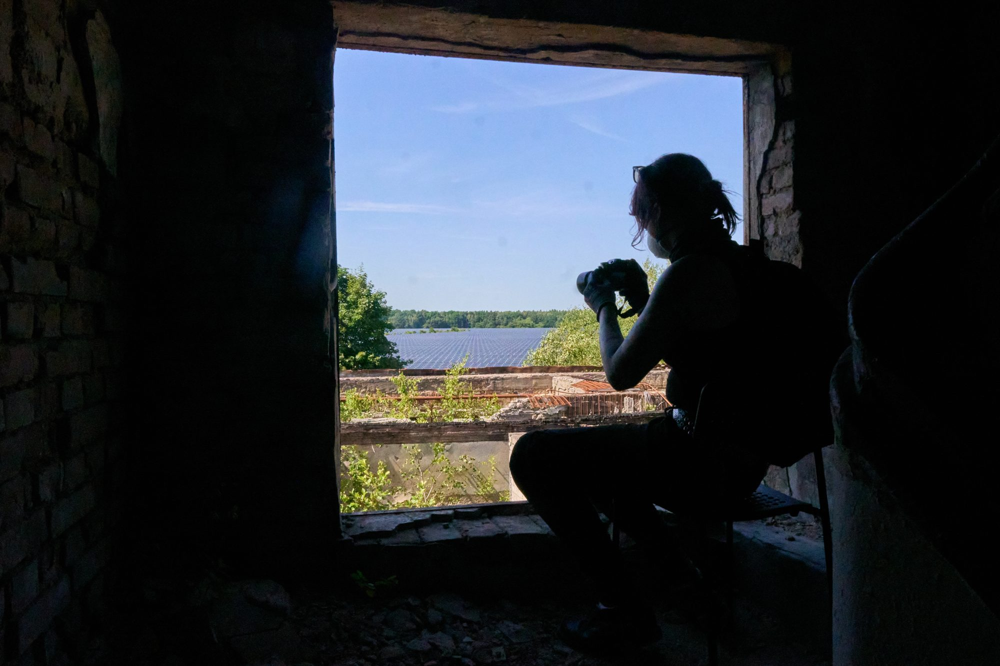
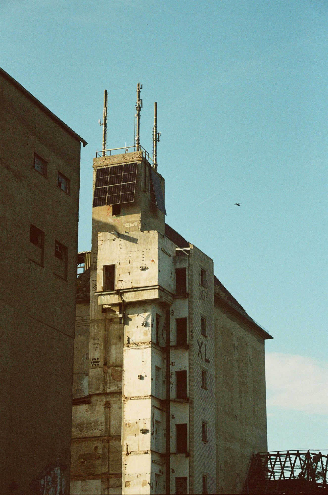
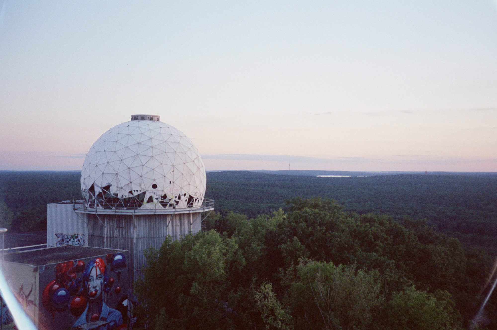
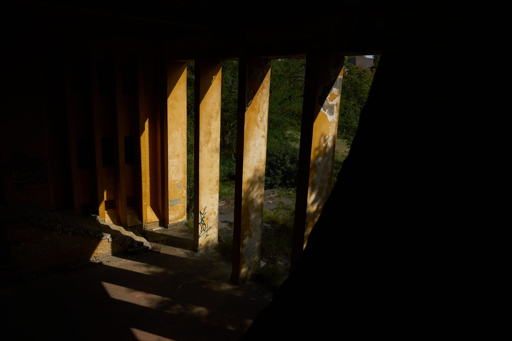
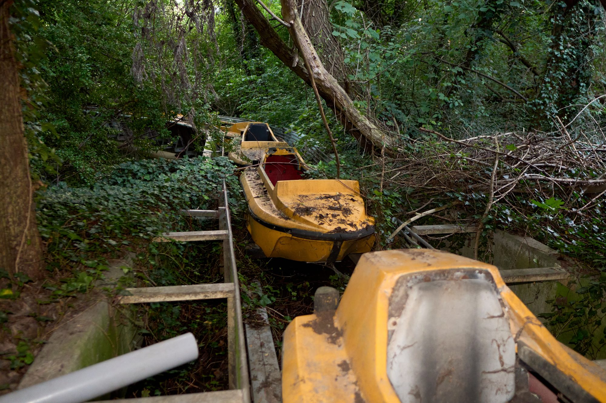
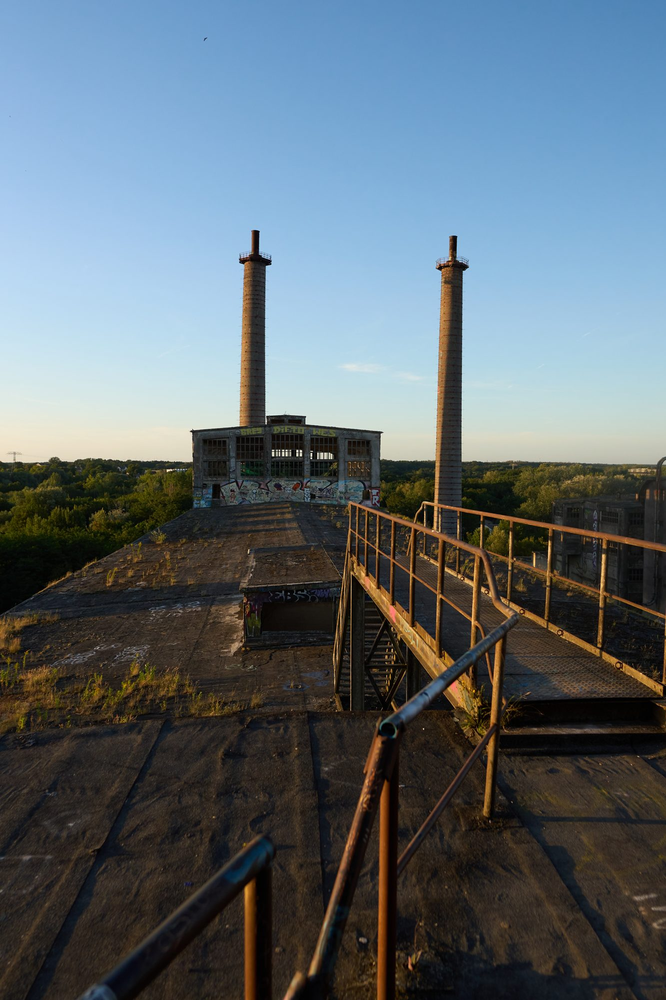
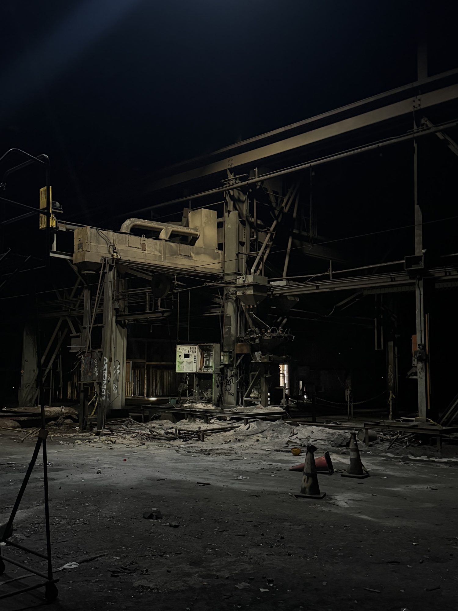
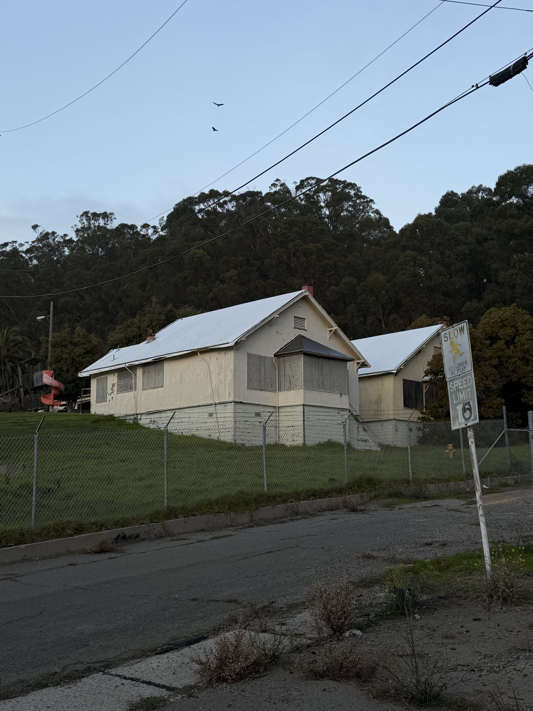
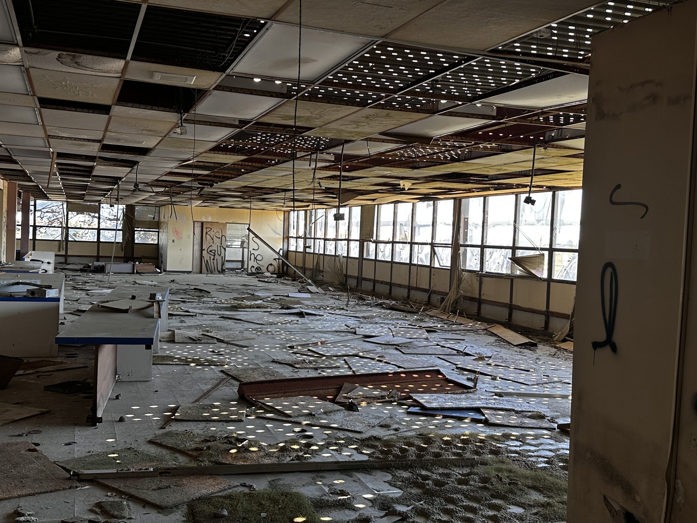

Germany

Wittstock
Fürstenberg
commercialized Teufelsberg Wünsdorf
Jüterbog
demolished Spreepark
RüdersdorfBay Area

Pacific Steel Casting Ferry Point
Ferry Point

Point Molate
demolished The Seismic Office, Treasure Island